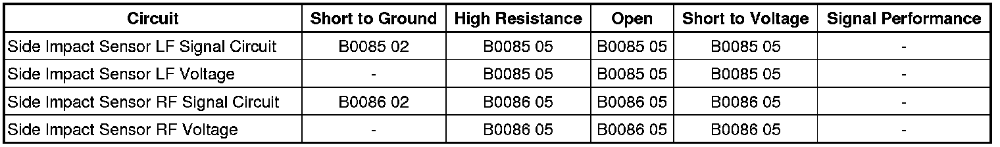

B0086
DTC B0085 or B0086
Diagnostic Instructions
* Perform the Diagnostic System Check - Vehicle (Initial Inspection and Diagnostic Overview) prior to using this diagnostic procedure.
* Review Strategy Based Diagnosis (Initial Inspection and Diagnostic Overview) for an overview of the diagnostic approach.
* Diagnostic Procedure Instructions (Initial Inspection and Diagnostic Overview)provides an overview of each diagnostic category.
DTC Descriptors
DTC B0085 00
- Left Front Side Impact Sensor
DTC B0085 0F
- Left Front Side Impact Sensor Erratic
DTC B0085 39
- Left Front Side Impact Sensor Internal Electronic Failure
DTC B0085 3A
- Left Front Side Impact Sensor Incorrect Component Installed
DTC B0085 71
- Left Front Side Impact Sensor Invalid Serial Data Received
DTC B0086 00
- Right Front Side Impact Sensor
DTC B0086 0F
- Right Front Side Impact Sensor Erratic
DTC B0086 39
- Right Front Side Impact Sensor Internal Electronic Failure
DTC B0086 3A
- Right Front Side Impact Sensor Incorrect Component Installed
DTC B0086 71
- Right Front Side Impact Sensor Invalid Serial Data Received
Diagnostic Fault Information

Circuit/System Description
The inflatable restraint side impact sensor (SIS) utilizes a unidirectional 2-wire circuit. The SIS modulates current on the interface to send ID, state of health, and deployment commands to the inflatable restraint sensing and diagnostic module (SDM). The SDM serves as a power source and a ground for the SIS. When the ignition is turned ON and input power from the SDM is first detected, the SIS responds by performing internal diagnostics and sending an ID to the SDM. The SDM considers the ID to be valid if the response time is less than 5 seconds. The SIS continually communicates status messages to the SDM, which determines if a fault is present in the SIS circuit. When a fault is detected, the SDM resets the SIS twice by removing and reapplying power to it. If the fault is still present, the SDM will set a DTC.
Conditions for Running the DTC
Ignition voltage is between 9-16 volts.
Conditions for Setting the DTC
All of the following conditions exist for 2.5 seconds:
B0085 02 or B0086 02
* The SIS has been shorted to ground.
* The SIS current has been above 23 mA for longer than 5 milliseconds.
B0085 05 or B0086 05
* The SIS has been shorted to voltage.
* The SIS circuit is open.
* The SDM has not received a message from the SIS for more than 375 milliseconds.
B0085 0F or B0086 0F
The SDM has received erratic messages from the SIS.
B0085 39 or B0086 39
* The SDM has received a NOK message from the SIS.
* The SDM has not received a message.
B0085 3A or B0086 3A
* The SDM has received an ID message from the SIS which does not match the ID stored in the SDM memory.
* The SDM has reset the SIS twice without detecting the correct ID message.
B0085 71 or B0086 71
The SDM has received invalid serial data from the SIS.
Action Taken When the DTC Sets
* The SDM commands the AIR BAG indicator ON via serial data communications.
* The SIR System is disabled and no deployments are allowed.
Conditions for Clearing the DTC
* The condition responsible for setting the DTC no longer exists and the scan tool Clear DTCs function is used.
* A history DTC will clear once 255 malfunction-free ignition cycles have occurred.
Reference Information
Schematic Reference
SIR Schematics ([1][2]Air Bag Systems)
Connector End View Reference
Component Connector End Views (Connector Views)
Electrical Information Reference
* Circuit Testing (Component Tests and General Diagnostics)
* Connector Repairs (Component Tests and General Diagnostics)
* Testing for Intermittent Conditions and Poor Connections (Component Tests and General Diagnostics)
* Wiring Repairs (Component Tests and General Diagnostics)
Circuit/System Testing
Important: When removing connectors, inspect for damage or corrosion. Damage or corrosion in the following requires repair or replacement of the affected component/connector:
* The SIS
* The SDM module
* The SIS wiring harness connector
* The SDM wiring harness connector
1. Ignition OFF, disconnect the applicable impact sensor harness connector and the SDM harness connector.
2. Test for infinite resistance between the applicable impact sensor signal circuit terminal A and ground.
• If less than infinite resistance, test the circuit for a short to ground.
3. Ignition ON, test for less than 1 volt between the applicable impact sensor signal circuit terminal A and ground.
• If greater than the specified range, test the circuit for a short to voltage.
4. Ignition ON, test for less than 1 volt between the applicable impact sensor voltage circuit terminal B and ground.
• If greater than the specified range, test the circuit for a short to voltage.
5. Test for less then 1 ohm of resistance between the applicable impact sensor and SDM signal circuit terminal.
* Inflatable Retraint Impact Sensing Module terminal A and SDM circuit terminal 40
* Inflatable Retraint Impact Sensing Module terminal A and SDM circuit terminal 41
• If greater than the specified range, test the circuit for an open/high resistance.
6. Test for less then 1 ohm of resistance between the applicable impact sensor and SDM voltage circuit terminal.
* Inflatable Retraint Impact Sensing Module terminal B and SDM circuit terminal 42
* Inflatable Retraint Impact Sensing Module terminal B and SDM circuit terminal 43
• If greater than the specified range, test the circuit for an open/high resistance.
7. If the circuits test normal, replace the applicable impact sensor.
8. Reconnect all SIR components.
9. With a scan tool, clear DTCs, verify DTC B0085 or B0086 is not set.
• If DTC is set, replace the SDM.
Repair Instructions
Perform the Diagnostic Repair Verification (Verification Tests) after completing the diagnostic procedure.
* Inflatable Restraint Side Impact Sensor Replacement (Inflatable Restraint Side Impact Sensor Replacement)
* SIR/SRS Wiring Repairs (Component Tests and General Diagnostics)
* Control Module References (Programming and Relearning)for SDM replacement, setup, and programming